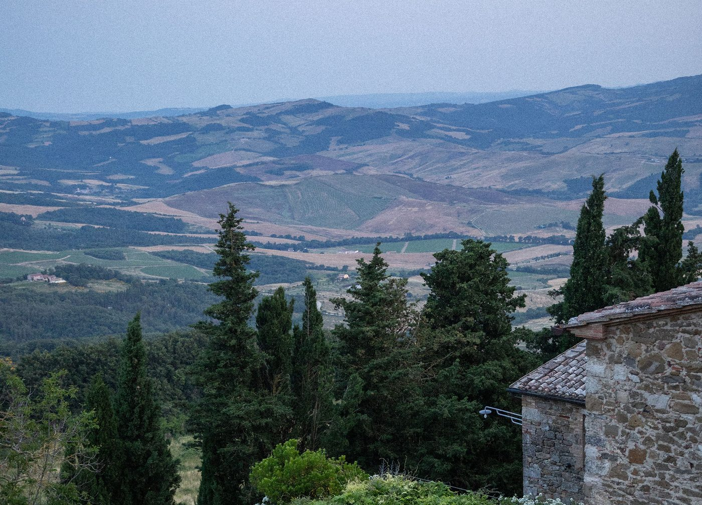
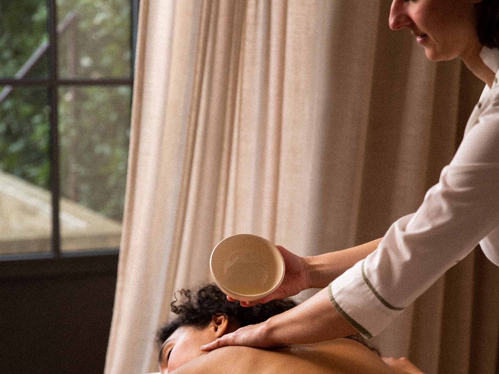

Monteverdi Tuscany : le village du Val d'Orcia devenu hôtel d'auteur
Un hameau médiéval quasiment abandonné, racheté maison par maison à partir de 2003, restauré pendant quinze ans et transformé en hôtel dispersé. Un 5 étoiles à deux Clés Michelin, une table de quatorze couverts signée Foster + Partners, et une leçon d'hôtellerie patiente.

L'église du XIVe siècle et la rue du hameau de Castiglioncello del Trinoro : l'hôtel est le village. Photo Monteverdi Tuscany.
TL;DR : l'essentielCe qu'il faut retenir
- Un hôtel dispersé dans un village entier, à Castiglioncello del Trinoro, commune de Sarteano, au cœur du Val d'Orcia classé à l'UNESCO.
- Un 5 étoiles distingué de deux Clés Michelin, et une table de quatorze couverts, Oreade, dessinée par Foster + Partners.
- Score LMHS 9,4/10 et Indice Immersion 4,9/5 : la note la plus haute que nous ayons attribuée hors de France.
Un hôtel, pas un palmarès. Cet article est un portrait d'établissement, comme notre enquête sur le Cheval Blanc Paris. La rédaction ne s'y est pas rendue : les faits proviennent de l'établissement, du Guide Michelin et de la presse spécialisée, et les points faibles sont signalés comme partout ailleurs sur ce site.
Un village racheté maison par maison
En 2003, l'avocat américain d'origine italienne Michael L. Cioffi découvre Castiglioncello del Trinoro, un hameau médiéval perché au-dessus du Val d'Orcia, vidé de ses habitants après la Seconde Guerre mondiale. Plutôt que de bâtir un resort, il choisit l'inverse : racheter les maisons de pierre une à une, respecter les volumes, restaurer avec les matériaux et les techniques d'ici. La restauration s'étalera sur une quinzaine d'années.
La designer romaine Ilaria Miani, réputée pour ses restaurations de demeures italiennes, signe les intérieurs. Le tour de force tient en une phrase : vider les pièces de tout folklore rustique sans effacer l'histoire. Murs à la chaux, poutres patinées, pierre nue, lin lavé, mobilier aux lignes nettes. Le confort moderne s'efface derrière la matière.
Le résultat n'est pas un hôtel avec vue sur un village : c'est le village. On dort dans une maison, on dîne dans une autre, on traverse la place pour aller au spa. La galerie d'art contemporain, la bibliothèque, l'enoteca, la terrasse panoramique et l'église du XIVe siècle, devenue salle de concerts, appartiennent au même ensemble.
Cinq étoiles et deux Clés Michelin. Classé 5 étoiles, Monteverdi figure aussi dans la sélection hôtelière du Guide Michelin avec deux Clés, distinction qui récompense « un séjour extraordinaire ». Attention à une confusion qui circule : ces deux Clés distinguent l'hôtel, ce ne sont pas des étoiles de restaurant. Aucune étoile n'est à ce jour attachée à ses tables.

Le dîner sous la pergola, au-dessus du Val d'Orcia. Photo Letizia Cigliutti pour Monteverdi Tuscany.
Une trentaine de clés, aucune identique
Les chambres et suites sont dispersées aux quatre coins du hameau et épousent les contraintes des anciennes bâtisses : aucune ne ressemble à sa voisine. S'y ajoutent trois maisons de village privées, louées avec les services de l'hôtel, qui expliquent que l'établissement se prête aux familles autant qu'aux couples.
Les catégories vont des Village Rooms, doubles intimistes, aux Village Suites et Tuscan View Suites tournées vers la vallée, jusqu'à la Monte Cetona Suite et à ses baignoires de travertin, puis aux maisons San Pietro, Amiata et Muri Antichi.
Sur la capacité, une réserve. L'hôtel ne publie pas le nombre exact de ses clés : les sources sérieuses donnent une trentaine au total, maisons privées comprises. Nous ne publions pas non plus de tarif d'appel : les montants qui circulent sur les plateformes varient d'une devise et d'une saison à l'autre, et une maison de cette taille se réserve en s'adressant directement à elle.
Zita et Oreade : deux tables, un seul chef
Les deux restaurants sont dirigés par Riccardo Bacciottini, né en 1990 à Poggibonsi, en province de Sienne. Son parcours explique beaucoup de ce qui se passe dans l'assiette : formation en France, deux ans et demi chez Gordon Ramsay à Londres, un passage chez Jason Atherton, Dubaï, puis plus de deux ans au Noma de Copenhague, y compris sur son éphémère mexicain, avant cinq ans au Castello di Velona et son arrivée à Monteverdi.
Zita, l'osteria
Zita joue les classiques toscans dans un décor de maison de campagne contemporaine : pici all'aglione, gnudi ricotta-épinards, bistecca, tiramisu. C'est la table du quotidien, ouverte du petit-déjeuner au dîner.
Oreade, quatorze couverts
Ouvert au printemps 2025, Oreade est le geste le plus fort de la maison. La salle, dessinée par Foster + Partners dans un bâtiment médiéval aux murs de pierre et aux sols récupérés, ne compte que quatorze couverts. Le vocabulaire revendiqué est celui de l'arte povera : 90 % des matériaux proviennent d'un rayon de 100 miles, soit environ 160 kilomètres.
Le menu dégustation change chaque soir. Bacciottini y travaille le gibier du territoire, lièvre, sanglier, daim, la Chianina, les poissons des lacs toscans, les herbes sauvages, les champignons de cueillette et les céréales anciennes. C'est une cuisine de lieu plus que de terroir : elle ne cite pas la Toscane, elle la prélève.
Monteverdi Culinary Academy
Des ateliers de cuisine, pâtes fraîches et fromage, se terminent par un repas partagé accompagné de vins locaux. Réservation par la conciergerie.
Le spa : rituels romains et longévité

Le spa mise sur les rituels de bains romains et les protocoles de longévité. Photo Letizia Cigliutti pour Monteverdi Tuscany.
Le parcours ressuscite la logique des bains romains : alternance de bassins froids, de chaleur et de douches, avant le soin. Les marques employées sont Santa Maria Novella, la plus ancienne officine de Florence, et Biologique Recherche. La maison a ajouté à son offre des protocoles de longévité et des programmes de bien-être sur mesure, tendance que l'on retrouve désormais dans les meilleures adresses européennes.
La piscine, le paysage, et ce qu'il y a autour
La piscine, bordée de pierre, est suspendue au-dessus des toits de tuiles : le regard tombe directement dans le Val d'Orcia. Elle est ouverte d'avril à octobre.
Autour, le programme est celui du Val d'Orcia : randonnée à cheval dans la réserve naturelle de Pietraporciana, chasse à la truffe avec un trufficulteur et ses chiens, dégustations de Brunello di Montalcino et de Nobile di Montepulciano, et les villages de Pienza, Bagno Vignoni et San Quirico d'Orcia à moins d'une heure. Dans l'église, la maison programme des concerts et accueille des résidences d'artistes ; la galerie présente des expositions tournantes.
Notre méthode, et le bémol
Cet article applique la grille LMHS Destination, notée sur 10, celle de nos palmarès par destination, doublée d'un indicateur propriétaire, l'Indice Immersion sur 5 : ancrage du lieu, intégration paysagère, part du territoire dans l'assiette et dans les matériaux, exclusivité de l'expérience. Monteverdi obtient 9,4/10 et 4,9/5, la note la plus haute que nous ayons publiée hors de France. Ces échelles ne se convertissent pas avec les notes sur 20 du Protocole LMHS, réservé aux maisons où nous avons dormi et payé.
Le bémol LMHS. Trois réserves, et elles tiennent au projet lui-même. La maison ferme de la mi-décembre à la mi-mars, ce qui exclut l'hiver toscan, souvent le plus beau. L'isolement est réel : la voiture est indispensable, l'accès se fait par des routes étroites, et l'aéroport de Florence est à plus d'une heure et demie. Enfin, un hôtel qui est un village se partage : le restaurant, la galerie et les concerts accueillent des visiteurs extérieurs, et l'on croise donc, sur la place, des gens qui ne dorment pas là. C'est le prix d'un lieu vivant plutôt que d'une enclave.
Ce que Monteverdi dit de l'hôtellerie d'auteur
Le luxe standardisé empile les prestations. Monteverdi fait l'inverse : il enlève. Pas de hall, pas de numérotation de chambres reproductible, pas de carte figée. Ce qui reste tient à trois choses, le temps, l'espace et l'ancrage, et c'est exactement ce que mesure notre Indice Immersion.
À rapprocher de notre palmarès des 50 meilleurs hôtels et spas de France pour la partie bien-être, de notre classement des 10 meilleurs 5 étoiles français hors Paris pour l'échelle de comparaison, et de notre sélection des meilleurs hôtels 5 étoiles de Sardaigne pour l'autre versant italien.
Questions fréquentes
Quelle est la meilleure période pour séjourner à Monteverdi Tuscany ?
Le printemps, d'avril à juin, et le début de l'automne, en septembre et octobre : lumière longue, températures douces, Val d'Orcia à son meilleur. La piscine est ouverte d'avril à octobre et la maison ferme de la mi-décembre à la mi-mars. L'été est vivant, avec les concerts dans l'église, mais la Toscane y est chaude et fréquentée.
Monteverdi Tuscany convient-il aux familles ?
Oui, en particulier grâce aux trois maisons de village privées, louées avec les services de l'hôtel, qui offrent l'indépendance d'une location et le confort d'une adresse hôtelière. Les activités de plein air des environs, équitation, randonnée, ateliers de cuisine, complètent bien un séjour en famille.
Peut-on dîner à Monteverdi sans y séjourner ?
Les tables et la programmation culturelle sont ouvertes aux visiteurs extérieurs, mais Oreade ne compte que quatorze couverts et le service se fait sur deux horaires : la réservation est indispensable, et il faut s'y prendre à l'avance. La conciergerie de la maison (concierge@monteverdituscany.com, +39 0578 268 146) est le point d'entrée.
Oreade a-t-il une étoile Michelin ?
Non, pas à la date de publication de cet article. La confusion vient de la distinction que porte l'hôtel : Monteverdi Tuscany est signalé par deux Clés Michelin, qui récompensent la qualité du séjour hôtelier, et non par des étoiles, qui distinguent les restaurants. Nous préférons le préciser plutôt que d'entretenir le malentendu.
Quelles activités depuis Monteverdi dans le Val d'Orcia ?
Randonnée à cheval dans la réserve de Pietraporciana, chasse à la truffe, dégustations de Brunello di Montalcino et de Nobile di Montepulciano, et la visite de Pienza, de Bagno Vignoni et de ses thermes, ou de San Quirico d'Orcia. Une voiture est nécessaire pour en profiter.
Comment réserver à Monteverdi Tuscany ?
La maison ne publie pas de grille tarifaire sur son site et travaille au séjour plutôt qu'à la nuit : on s'adresse directement à elle, par téléphone au +39 0578 268 146 ou par courriel à travel@monteverdituscany.com, en précisant les dates et le type d'hébergement souhaité, chambre, suite ou maison de village privée.
Informations pratiques
- Adresse : Via di Mezzo, Castiglioncello del Trinoro, 53047 Sarteano (SI), Italie
- Téléphone : +39 0578 268 146 (Italie), +1 866 644 0787 (États-Unis)
- Réservations : travel@monteverdituscany.com · Conciergerie : concierge@monteverdituscany.com
- Classement : 5 étoiles
- Distinction : deux Clés Michelin
- Saison : de la mi-mars à la mi-décembre ; piscine ouverte d'avril à octobre
- Tables : Zita (osteria) et Oreade (14 couverts, menu dégustation, deux services)
Pour aller plus loin
- Les meilleurs hôtels 5 étoiles en Sardaigne, l'autre versant italien de nos sélections
- San Montano Resort & Spa, Ischia, notre troisième avis italien et le premier Relais & Châteaux de l'île
- The Romanos, Costa Navarino, le contraire exact de Monteverdi : 321 chambres au lieu de quatorze couverts
- Les 10 meilleurs hôtels 5 étoiles de France hors Paris, l'échelle de comparaison
- Les 50 meilleurs hôtels & spas de France 2026, le palmarès national
- Hôtel de luxe avec spa à Paris, les 8 spas de palaces comparés
- Cheval Blanc Paris : notre enquête, l'autre portrait d'établissement du média